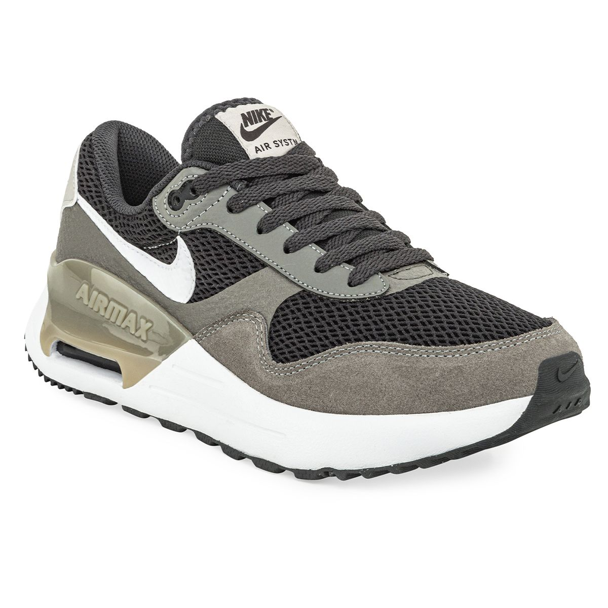
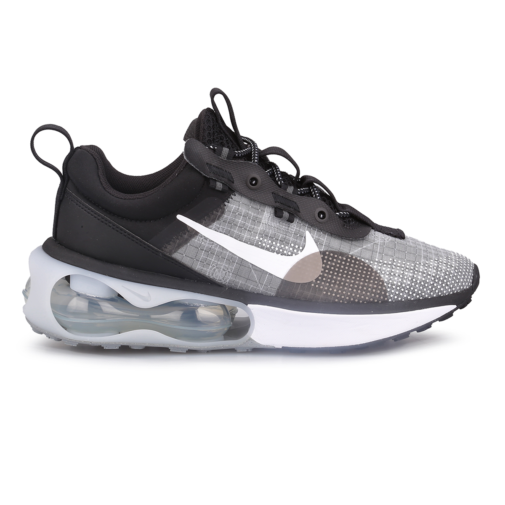
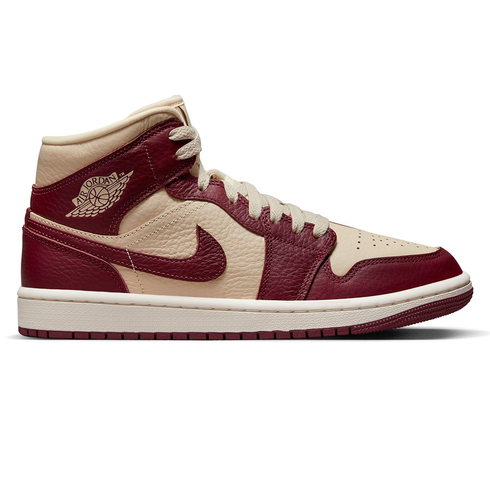

Zapatillas disponibles
-

Nike Air Max SYSTM GRIS
Air Max SYSTM recupera todo lo que te encanta de tus vibraciones favoritas de los 80. La amortiguación NIKE Air visible y probada se combina con una parte superior elegante de inspiración deportiva. Diseñado originalmente para carreras de alto rendimiento, la amortiguación Max Air brinda una comodidad comprobada. Inspirándose en todos tus modelos Air Max favoritos de los años 80, obtenés una estética tradicional con un toque moderno. La parte superior de material mixto brinda durabilidad y transpirabilidad, mientras que la suela exterior de goma agrega tracción duradera. Debido a la naturaleza de exclusiva calidad de los materiales, podría ocurrir que en algunos casos el producto destiñera levemente, sobre todo en condiciones de humedad. Mientras esté mojada se aconseja que la zapatilla no entre en contacto con otras prendas claras hasta que no esté completamente seca.
U$S 200
-

Nike Air Max 2021
Las Zapatillas Nike Air Max 2021 brindan soporte y estabilidad a tus pisadas, para que disfrutes a pleno de cada carrera y mejores tu rendimiento en cada entrenamiento. La capellada de tela y cuero sintético aporta transpirabilidad y es sumamente duradera. La tecnología Air Max ofrece una cámara de aire que cubre desde el talón hasta el medio pie, que amortigua y absorbe el impacto de cada paso que des para que tu andar sea más ligero y confortable.
U$S 400
-

Air Jordan 1 Mid SE
Es un modelo que pese a su fabricación en cuero cuenta con diferentes abertiras a lo largo de todo el upper que ofrecen buena transpirabilidad. Su media suela esconde un secreto, la capsula de amortiguación Air para ofrecerte un plus de comodidad en tu outfit urbano o si decides ponerte a jugar a basket con ellas.
U$S 350